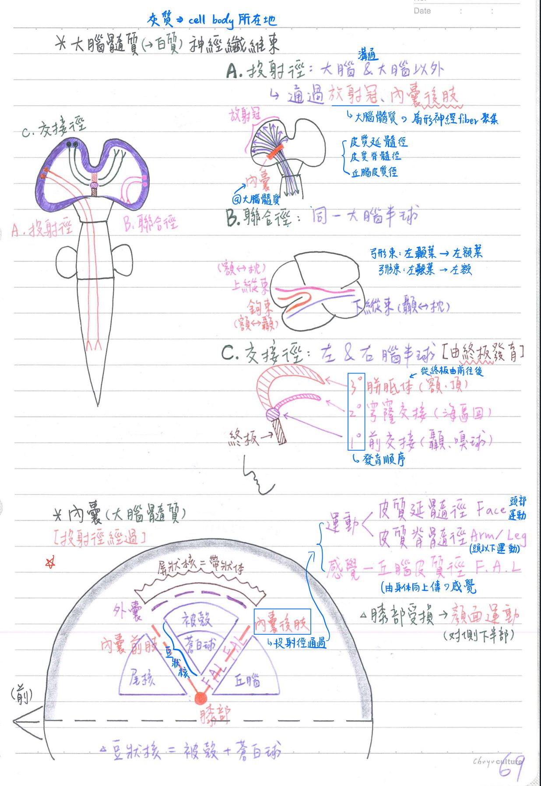

🧠 CNS-大腦：大腦髓質
大腦髓質(cerebral medula)=白質：位大腦內側；具神經纖維徑(3類)
投射徑(projection)：聯絡大腦及大腦以外神經組織之上升徑、下降徑
- 通過放射冠(corona radiata)、内囊(internal capsule)
- 放射冠：位於大腦髓質之扇形神經纖維聚集
- 內囊：位於大腦髓質
- [重點]構造：
- 前肢(ant. limb)：分隔尾核(頭)/豆狀核
- 膝部(genu)
- 後肢(post. limb)：分隔丘腦/豆狀核；[重點]投射徑通過
- 功能：(身體越上方的感覺/運動，越靠近內側)
- 皮質延髓徑
- 皮質脊髓徑(運動)
- 丘腦皮質徑(感覺)
- [重點]構造：
★★★[110-2]聯合徑(association)：聯络同一大腦半球內外側
- [重點]外側：
- ★★[110-2]鉤束(uncinate fasciculus)：額葉←→顳葉
- 上縱束(sup. longitudinal f.)：額葉←→枕葉
- 下縱束(inf. longitudinal f.)：顳葉←→枕葉
- 弓形束(arcuate f.)：左顳葉(魏氏區Wernicke)←→左額葉(布氏區Broca)
- 內側：
- 上枕額束(sup. occipitofrontal f.)：枕葉←→額葉(經胼胝體、內囊、尾核)
- 下枕額束(inf. occipitofrontal f.)：枕葉←→額葉
- ★★[110-2]扣帶(cingulum)：額葉/頂葉(扣帶回)←→顳葉(旁海馬回)
★交接徑(commissure)：聯絡左、右兩半球間
- 由聯絡左右終腦之終板(laminaterminalis)發育而來
- [重點]發育順序：
- 1st 發育：前交接(anterior commissure)=聯络舊皮質(paleocortex)
→聯絡左右嗅球、顳葉
- 2nd 發育：穹窿交接(fornix commssure)=聯絡古皮質(archicortex)
→聯絡左右海馬回
- 3rd 發育：★★★★[110-2]胼胝體(corpus callosum)=聯絡新皮質(neocortex)
→聯絡左右額葉、頂葉- 胼胝體起自終板由前向後延伸，在間腦頂部形成一弓形構造
- 1st 發育：前交接(anterior commissure)=聯络舊皮質(paleocortex)
[補充]胚胎學皮質分類
- 新皮質(neocortex)：具有「超越(抑制)原始本性」的功能
- 人類主要的大腦皮層
- EX：接收感覺、產生運動訊息、空間推理、邏輯思考、語言等，並有是非的觀念
- 古皮質(paleocortex)：原始本性，如喜怒哀樂
- 顳葉比較下側及中間位置、含：rostral insular cortex、 piriform cortex(梨狀皮質)、primary olfactory cortex
- 舊皮質(archicortex)：原始本性，如喜怒哀樂
- 海馬迴

📖 書本補充：與筆記不同或筆記沒寫到的地方
⚠️
以下為對照書本後整理，筆記原文未更動。標「筆記 vs 書」的是兩邊寫法不同、建議回頭確認的地方。
大腦白質三類纖維（p.436）
- 連合纖維（左右半球）：胼胝體（書以紅字強調）、前和後連合、海馬連合（筆記的穹窿交接）。筆記沒有提到後連合。
- 聯絡纖維（同一半球不同皮質區）：上縱（弓狀）束、上和下枕額束、扣帶（走在扣帶回內）、鉤束（額葉到顳葉）。
- 筆記 vs 書：筆記把上縱束（額↔枕）與弓形束（Wernicke↔Broca）分成兩條；書上寫成「上縱（弓狀）束」，把弓狀束視為上縱束的一部分（同一條）。作答上沒有衝突：問連接 Broca 與 Wernicke 區的仍選弓狀束（見 111-2-2）。
- 投射纖維（進出皮質）：
- 進入皮質：丘腦皮質纖維。
- 離開皮質：經內囊，包括皮質脊髓、皮質橋腦、皮質丘腦纖維。
- 書的提示：離開皮質的投射纖維先形成放射冠→往下構成內囊→再走在大腦腳（crus cerebri）及橋腦基部→最遠到延髓的錐體。
- 考題補充：Meyer's loop 是視覺放射（外側膝狀體→枕葉）中先往前繞的部分，傳的是視覺，不是聽覺（102-2-1）。
皮質的胚胎分類（p.431）
- 筆記 vs 書：筆記「胚胎學皮質分類」補充中寫「古皮質（paleocortex）」「舊皮質（archicortex）＝海馬迴」；書上的用詞剛好相反：古皮質＝archicortex（3層，齒狀回、海馬回）；舊皮質＝paleocortex（3–5層，海馬旁回、鉤部）。筆記前面「交接徑發育順序」寫前交接＝舊皮質（paleocortex）、穹窿交接＝古皮質（archicortex），這部分與書一致，只有補充區塊的中文名稱對調了。
📝 書中歷屆考題（點選答案作答）
102-2-1p.436
下列有關大腦白質之敘述，何者錯誤？
💡 Meyer's loop 是外側膝狀體往枕葉的視覺放射中先往前走的部分，傳遞視覺訊息。
103-1-2p.437
下列何者不屬於大腦白質的聯合纖維 (association fiber)？
110-2-12p.437
下列何者不是大腦白質 (white matter) 中的聯合纖維 (association fiber)？
111-2-2p.437
連結大腦皮質的布羅卡氏區 (Broca's area) 與沃尼克氏區 (Wernicke's area) 間的主要神經纖維束稱為：
💡 Broca 區在額葉、Wernicke 區在顳葉，連接兩者的主要纖維是弓狀束。